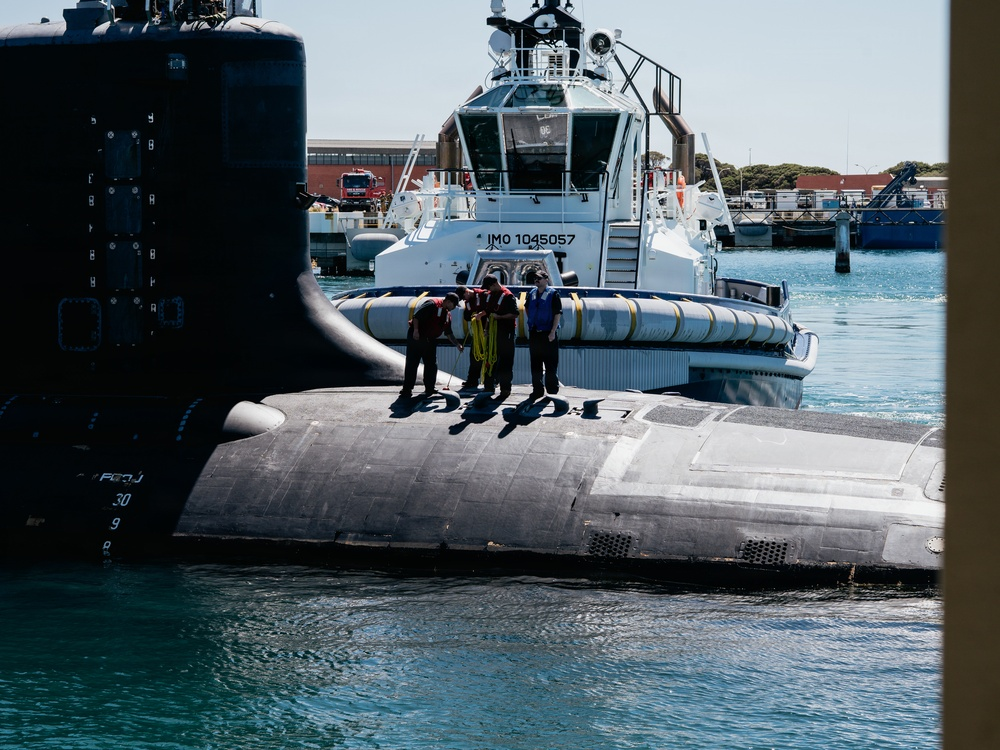

Petty Officer 2nd Class Nicholas Russell · DVIDS 10051322 · Public domain · USS Colorado (SSN 788) arrives at HMAS Stirling, Western Australia, Oct. 27, 2026.
DVIDS
USS Colorado arrived at HMAS Stirling for a month of Australian maintenance
A Navy release dated today says the Virginia-class fast-attack submarine USS Colorado (SSN 788) arrived at HMAS Stirling to begin a scheduled, monthlong maintenance period. The release calls it the fourth submarine maintenance period in Western Australia since AUKUS, and the third in the last 12 months. More than 30 certified Australian civilian technicians from ASC Pty Ltd. will do routine work on a Virginia-class boat there for the first time. The photo caption dates the arrival Oct. 27 and calls the visit a step toward Submarine Rotational Force-West.
DVIDS · Read source →